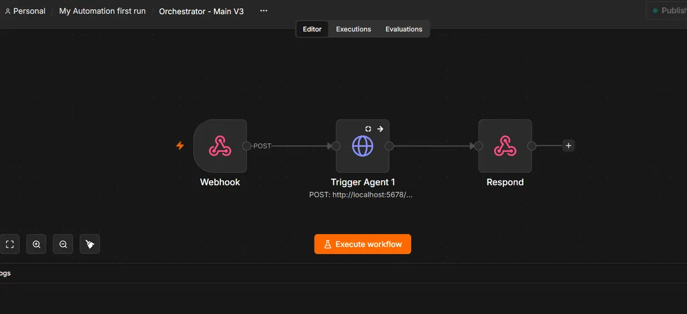
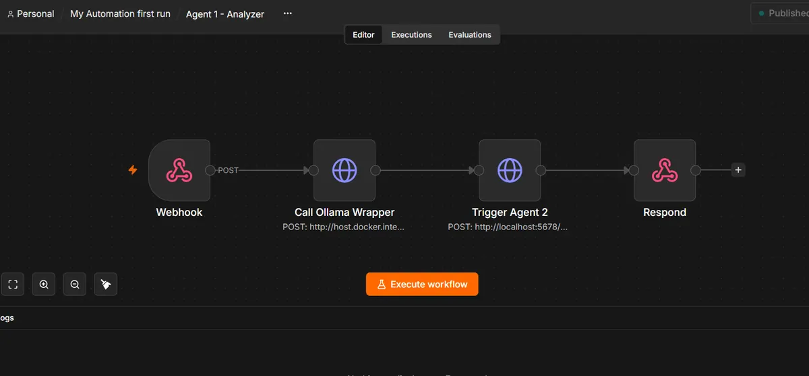
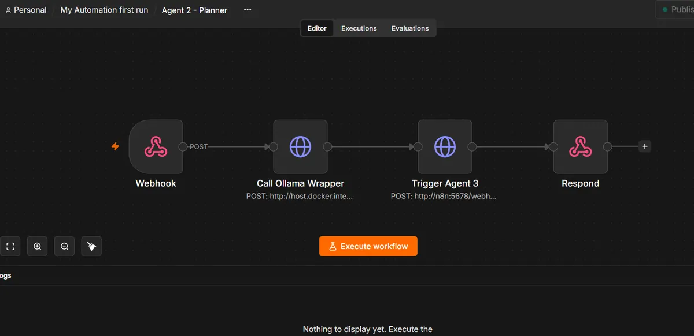
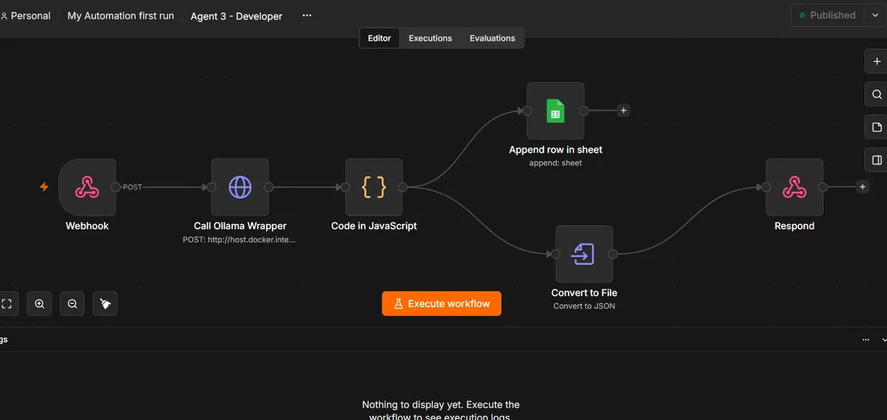
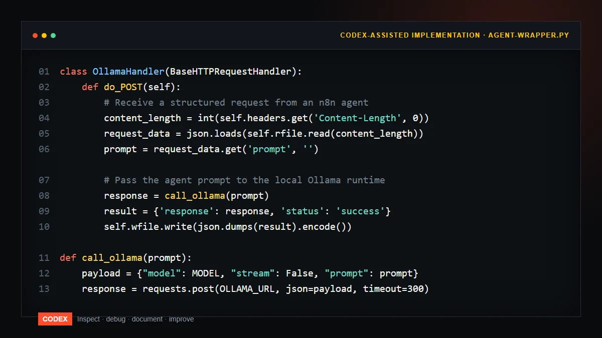

Case study · 2026 · Self-hosted
A multi-agent pipeline: one webhook in, a reviewed, stored result out.
A self-hosted n8n system that turns a raw request into a chain of specialist AI agents — Analyzer, Planner, Developer — running against local language models, with Codex-assisted implementation and normalized results written back to Google Sheets. Every stage was built, broken, debugged, and rebuilt.
Hands-on personal project. This is self-study, not paid client work. It documents how I turn a business objective into a working system — and how the failures taught more than the successes.
01Business problem
A single-purpose automation solves exactly one task. Whenever a new task arrived — classify a message, draft a reply, summarize a document, suggest a next step — the fix was to hand-build another isolated workflow. That approach scales poorly: logic duplications, inconsistent outputs, no shared memory between steps, and nothing reusable across requests.
I needed a reusable pipeline that could accept any request, split the work across specialized agents, produce a structured result, and store it — without a cloud lock-in or sending business data to a third-party API.
02Goal & acceptance criteria
Goal: one authenticated webhook accepts a request and returns a validated, structured result with minimal human effort.
- A single POST webhook is the only entry point.
- Each task is routed to a specialized agent (Analyzer, Planner, Developer).
- Results are normalized to a consistent schema before storage.
- Every run is appended as a row to Google Sheets, ready for human review.
- A failed run must not silently corrupt stored data — it is marked and recoverable.
03Workflow diagram





Webhook → Orchestrator → Analyzer → Planner → Developer → Normalizer → Google Sheets
04Input payload (JSON)
The webhook expects a compact, JSON body. Factoring the request this way keeps every downstream agent working from the same shape.
{
"source": "webhook",
"request_id": "req_2026_0917",
"action": "summarize_and_classify",
"payload": {
"text": "Customer asks how to automate invoice arrivals and route them to accounting.",
"entity": "support_team"
},
"expected": "structured_summary"
}05Node-by-node data flow
| Node | Role | Detail |
|---|---|---|
| Webhook | Entry point | Authenticates the POST, then passes request_id + payload downstream. |
| Orchestrator | Router | Reads action, selects the agent sequence, and tracks the run's state. |
| Analyzer | Intent parsing | Calls the local Ollama wrapper to extract intent, entities, and the expected output shape. |
| Planner | Task planning | Turns the analyzed object into a step list plus its own validation plan. |
| Developer | Generation | Executes the planned generation and returns a draft; reusable parts are refined with Codex. |
| Normalizer | Enforcement | Enforces the schema: strips markdown, coerces types, fills defaults, flags gaps. |
| Google Sheets | Storage | Appends one row per run with a status column reserved for human review. |
06Credentials & authentication
Local AI
Ollama runs on localhost — no account, no third-party keys, and no business data leaving the machine.
Webhook
Requests are authenticated with a random token kept in environment variables (.env / .dev.vars), never committed.
Google Sheets
A scoped service-account key (also env-only) with write access to exactly one worksheet.
Secrets hygiene
.env, .dev.vars, and generated keys are git-ignored in both the n8n and the local-wrapper projects.
07API details
| Interface | Call | Notes |
|---|---|---|
| n8n Webhook | POST /webhook/ingest | Header-token auth; returns the run's request_id immediately. |
| Ollama | POST localhost:11434/api/generate | Streaming off; model, prompt, and options supplied per agent call. |
| Ollama wrapper | Python, requests | Retries with backoff; extracts and JSON-parses the model reply. |
| Google Sheets API v4 | values:append | One row per run with INSERT_DATA_OPTION to avoid duplicate headers. |
All generated credentials are stored in environment variables, and the wrapper reads them at start — never from source files.
08Transformations
Three transformations happen between nodes; each one was added after a real failure (see sections 11–13).
- Analyzer normalize: free-text prompt →
intent,entity,expected_outputas typed fields. - Markdown strip: model replies often arrive in
```jsonfences — the wrapper strips fences before parsing so the next node receives plain JSON. - Row normalizer: values are trimmed and type-coerced to match the sheet's columns exactly, with defaults for missing fields and a status column (
approved/needs_review/failed).
09Expected output
A single, complete run appends one row. The JSON passed between agents looks like this:
{
"request_id": "req_2026_0917",
"summary": "Route invoice arrivals to accounting and set up automated parsing.",
"category": "automation",
"confidence": 0.92,
"agent_path": ["analyzer", "planner", "developer"],
"status": "approved",
"stored_at": "2026-09-17T10:04:22+08:00"
}In the sheet, that becomes a single row: request_id · summary · category · confidence · agent_path · status · stored_at.
10Deliberate failure tests
Before trusting the system, I broke it on purpose — one input class at a time. The table records each test, the expectation, and the observed result.
| Test | What should happen | Result |
|---|---|---|
| Malformed JSON body | Rejected with a clear 4xx and an error message | Pass |
Missing action | Defaults to summarize and flags the run | Pass |
Empty payload.text | Short-circuits to status skipped, no agent calls | Pass |
| Wrong Ollama model name | Clear error surfaced, run marked failed | Pass |
| Ollama service down | Retries with backoff, then fail-safe row | Pass |
| Revoked Sheets token | Error trapped; run recorded with a retry flag | Pass |
Duplicate request_id | Idempotency guard returns the existing row | Pass |
The deliberate failures that did leak through became the debugging stories in the next section.
11Actual errors
These are the failures that escaped the planned tests. Each one was captured from the run log — the raw text is abbreviated, but every entry below is a real failure class I hit.
| # | Observed error | Where it surfaced |
|---|---|---|
| E1 | Quotes / newlines in the request broke the prompt before it reached the model | Wrapper → Ollama call |
| E2 | Row rejected by Sheets: value count did not match the column count | Google Sheets append |
| E3 | The model wrapped its reply in ```json fences; the next node failed to parse | Analyzer → Planner boundary |
| E4 | Webhook timed out on a long first generation (cold model load) | n8n Webhook response |
| E5 | Output looked correct, but the stored row carried the wrong action field | Normalizer → Sheets |
12Root cause
| Error | Root cause |
|---|---|
| E1 | User-supplied text was interpolated into the prompt string without escaping — classic injection surface. |
| E2 | One agent had written a value containing a newline, producing an extra physical row. |
| E3 | The wrapper parsed the raw completion instead of extracting the fenced content first. |
| E4 | The webhook timeout was shorter than cold-start inference on a local model. |
| E5 | The analysis output placed action in a display field and a label in the schema field — the mapping was off by one. |
13Fix and why it works
| Fix | Why it works |
|---|---|
| Pass the payload as a JSON string, not a raw interpolated prompt | Eliminates quote/newline injection — the model receives one unambiguous JSON document. |
| Sanitize values for newlines and normalize cell counts before append | Every run writes exactly one row: columns and cells always line up. |
| Strip markdown fences before JSON parsing | Downstream nodes always receive clean, parseable JSON. |
| Move the webhook to the worker pattern + raise the timeout, add retry with backoff | The client gets an instant request_id; long generations run safely in the background. |
| Validate the field mapping in the normalizer with a fixed column map | Schema columns and agent fields are now bound by one explicit map — no off-by-one guesses. |
The state of the system after these fixes is the version captured in the screenshots: stable enough to record 10 normalized results in the lab.
14Final workflow
After fixes E1–E5, the pipeline is: Webhook → Orchestrator → Analyzer → Planner → Developer → Normalizer → Google Sheets, with the local Ollama wrapper at every model call and Codex used to inspect and refine the wrapper's generated Python.
It is deliberately boring by design — a fixed schema, explicit column map, idempotency guard, and status flags. That boring-ness is what makes it trustworthy enough to leave running.
15Lessons learned
- Valid workflow JSON is not automatically a correct business automation. The flow can be structurally perfect and still deliver the wrong field, the wrong row, or a silent failure.
- Design the human step in from the start. A status column and a review path cost minutes at build time and save hours of cleanup later.
- Specialize the agents. Small, single-purpose agents with typed intermediate objects are easier to test, debug, and reuse than one giant prompt.
- Local-first is a feature. Running Ollama locally means no per-token cost and no business data leaving the machine — a real advantage to sell.
- Document the failures. The five errors above are now the project's best asset: they show exactly what "debugging" means in practice.
16Next version
- Add MCP tool connections so agents can act on external tools, not just reason about them.
- Add persistent memory per request_id across runs (the conference-style memory model, applied here).
- Add an approval checkpoint step where a human can approve, edit, or reject before anything is executed.
- Add a RAG knowledge base so agents answer against project documentation instead of general knowledge.
- Expose a small run dashboard over the sheet so status, errors, and retries are visible at a glance.